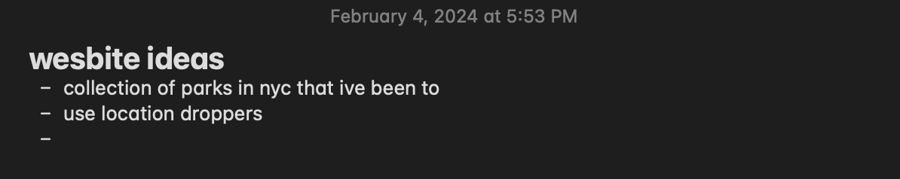
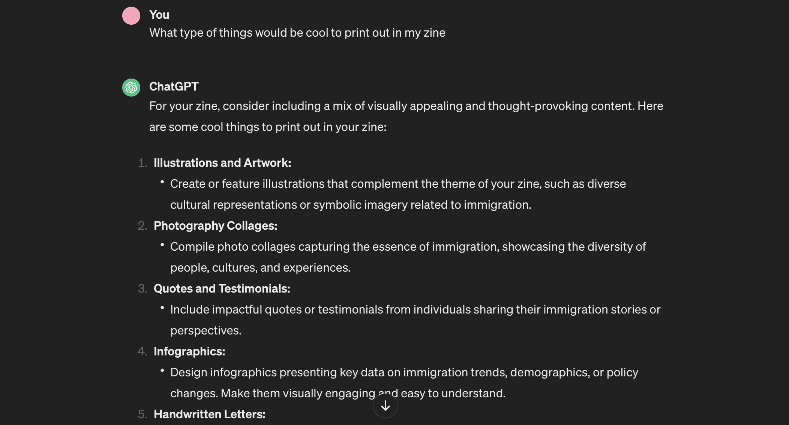
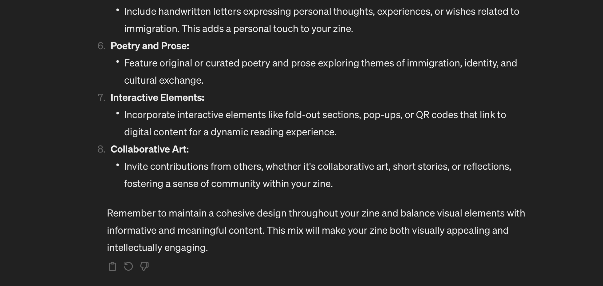

this week i have done more research and started thinking realistically about the time constraits i'm under and what i should focus on for my project. i realized that i want to use mainly my own assets for the zine and use public doman images only when necessary. i think my best bet in order to have original assets would be to refocus my idea and instead shift to another thing i can photograph myself.
one of my favorite things about nyc since i've been moved here is it's parks. i think that i want to instead create a zine centered around various nyc parks.

i also think this would be a more interesting thing to use in terms as a website. i want to focus on parks that i've been to and only use a couple.
as a way to help brain storm i started thinking of things that i could incorpate into my zines besides photographs. i used chatGPT as a resource:


i have currently been looking into the services at nyu i could use for my project, specifically the nyu print lab.
this is the website i could find for it:
nyu print lab →
at the time of me posting there is no way to book an appointment to print anything which is unfortunate but hopefully in the coming weeks the print lab opens up.